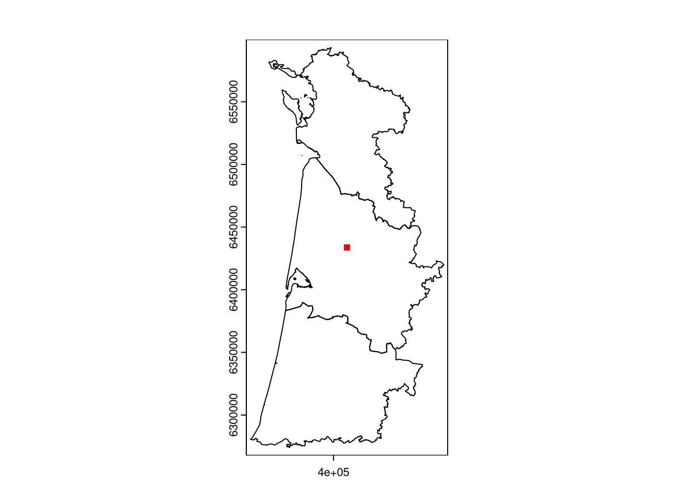
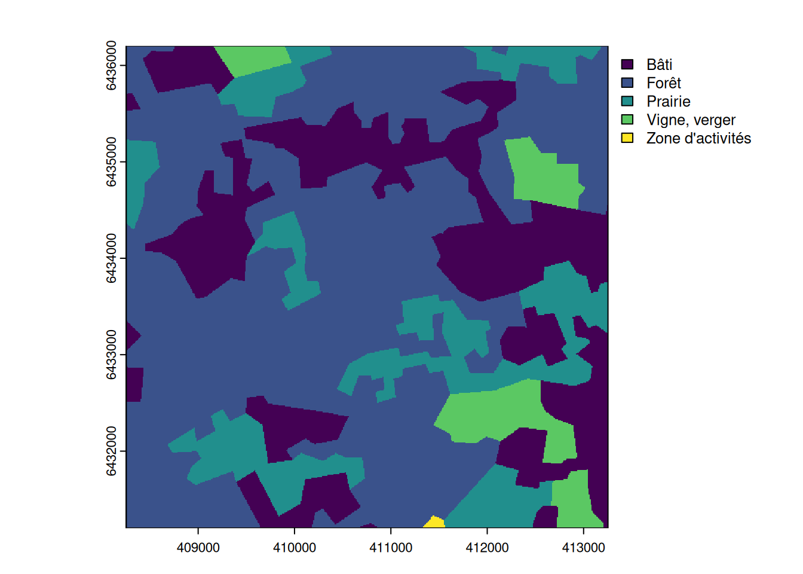
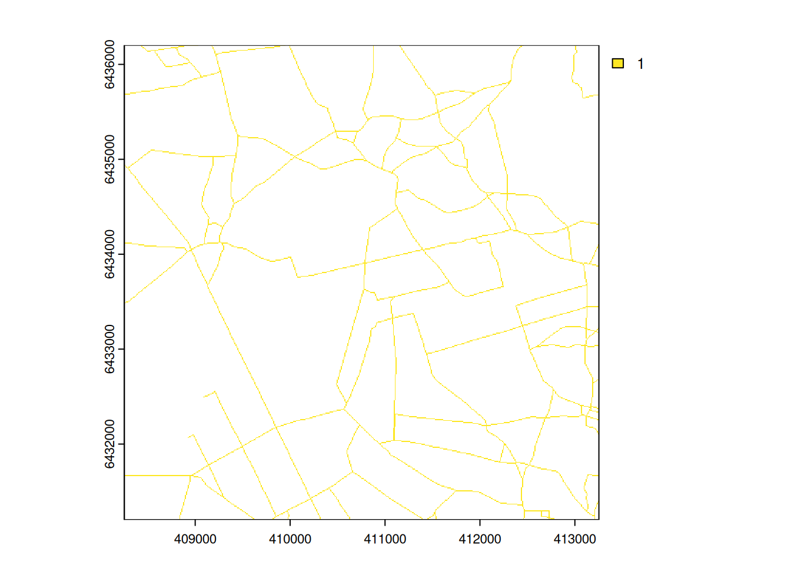
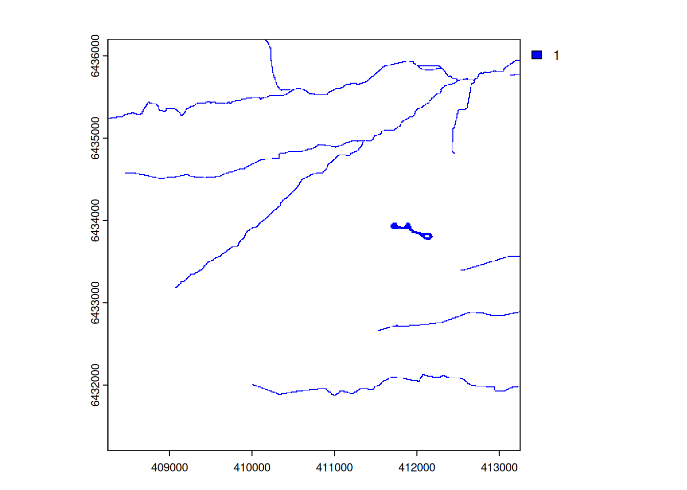
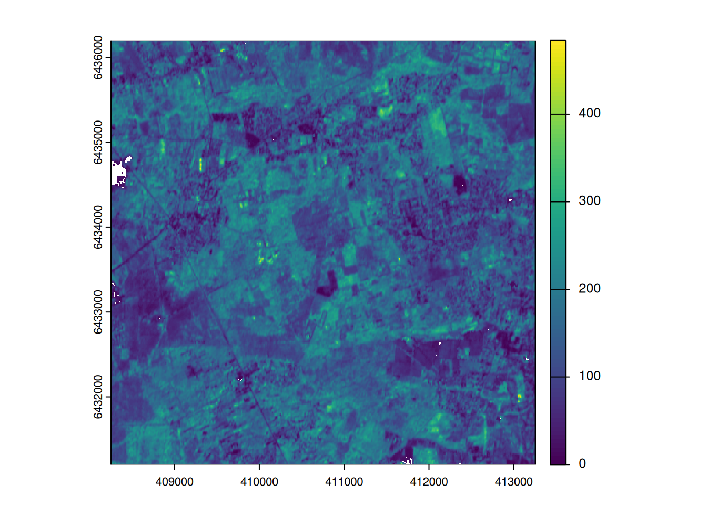

# make sure needed packages are installed
pak <- c("terra", "here")
if (!requireNamespace(pak, quietly = TRUE)) {
install.packages(pak)
}
# load packages
library(terra) |> suppressPackageStartupMessages()
library(here) |> suppressPackageStartupMessages()
# set data directory
datadir <- here("data")Tutorial on creating high resolution rasters
Aim
The goal is to explore high resolution datasets for characterizing the department of Landes (40), in Gironde (33), in Charente Maritime (17). We will focus on dataset from BD CARTO and vegetation indices from Copernicus
0. Setting-up
Install and load packages
For this workflow, we mostly rely on terra R package.
Download data
The BD CARTO needs to be downloaded and stored in data/ folder. You can download them by hand and move them to the data/ folder. Or you can run the code below to do this step automatically (total size: 700Mb).
Code
if (!dir.exists(datadir)) {
dir.create(
path = datadir,
showWarnings = FALSE,
recursive = TRUE
)
}
options(timeout = 1500)
dep <- c("17", "33", "40")
base_url <- "https://data.geopf.fr/telechargement/download/BDCARTO/BDCARTO_5-0_TOUSTHEMES_SHP_LAMB93_D0XX_2025-03-15/BDCARTO_5-0_TOUSTHEMES_SHP_LAMB93_D0XX_2025-03-15.7z"
for (i in dep) {
diri <- paste0("BDCARTO_5-0_TOUSTHEMES_SHP_LAMB93_D0", i, "_2025-03-15")
if (!dir.exists(here::here(datadir, diri))) {
tempfile <- file.path(datadir, "temp_17.7z")
download.file(gsub("XX", i, base_url), tempfile, mode = "wb")
# extract all
archive::archive_extract(tempfile, dir = datadir)
# remove archive
file.remove(tempfile)
}
}Vegetation index from COPERNICUS Land Monitoring Service requires registration, so it’s easier to download them by hand. As an example, I downloaded (4Gb) the Seasonal Productivity of 2023 at 10m spatial resolution (DOI 10.2909/5ae0f2a2-7ad8-4f7c-878d-f1b09d78d7a1).
Set spatial extent and grid
dep_files <- list.files(datadir, "DEPARTEMENT.shp", recursive = TRUE)
dep33 <- dep_files[grepl("033", dep_files)]
shp <- vect(here(datadir, dep33))
shp <- shp[shp$INSEE_DEP %in% dep]
plot(shp)
# create grid with 10m resolution
grid10 <- rast(shp, res = 10)
# create a small zoom for testing
# set a an area at +/-2.5km (500 pixels)
mean_ext <- mean(ext(shp))
z <- ext(rep(mean_ext, each = 2) + rep(c(-2500, 2500), 2))
zoom10 <- crop(grid10, z)
plot(z, col = "red", border = NA, add = TRUE)
All analysis will be carried out for the three departments.
As an illustration, maps will zoom on the small 500x500 pixel area at the centre of the study area.
1. Land cover
#load all land cover data
lulc_files <- list.files(
datadir,
"OCCUPATION_DU_SOL.shp",
recursive = TRUE,
full.names = TRUE
)
lulc_list <- lapply(lulc_files, vect)
lulc <- do.call(rbind, lulc_list)
table(lulc$NATURE)
Bâti Broussailles Carrière, décharge Eau libre
1351 42 71 163
Forêt Marais, tourbière Prairie Sable, gravier
2889 132 3011 43
Vigne, verger Zone d'activités
1072 469 # might be good to group some of the categories?# clip the land cover with the regions
lulc <- crop(lulc, shp)
# plot(lc, col= rainbow(10)[as.factor(lc$NATURE)], border=NA)
# rasterize at 10m resolution
lulc_gd <- rasterize(
lulc,
grid10,
field = "NATURE",
filename = here(datadir, "BDCARTO_173340_LULC_10m.tif"),
overwrite = TRUE
)
plot(lulc_gd)
plot(shp, add = TRUE, border = "black")
2. Road network
#load all road network
road_files <- list.files(
datadir,
"TRONCON_DE_ROUTE.shp",
recursive = TRUE,
full.names = TRUE
)
road_list <- lapply(road_files, vect)
road <- do.call(rbind, road_list)
table(road$NATURE)
Bac ou liaison maritime Bretelle Chemin
54 1476 58445
Escalier Rond-point Route à 1 chaussée
3 28 363647
Route à 2 chaussées Route empierrée Sentier
7063 41656 514
Type autoroutier
2773 # might need to remove some type of roads ...# clip the land cover with the regions (take some time)
road <- crop(road, shp)
# might be good to set the width of the road based on its nature
table(road$NATURE)
# plot(road, col= rainbow(10)[as.factor(road$NATURE)])
# rasterize
road_gd <- terra::rasterize(
road,
grid10,
touches = TRUE,
filename = here(datadir, "BDCARTO_173340_Road_10m.tif"),
overwrite = TRUE
) # add field = "NATURE" to keep information on type of roads
3. Rivers and lake
#load all rivers
river_files <- list.files(
datadir,
"TRONCON_HYDROGRAPHIQUE.shp",
recursive = TRUE,
full.names = TRUE
)
river_list <- lapply(river_files, vect)
river <- do.call(rbind, river_list)
lake_files <- list.files(
datadir,
"SURFACE_HYDROGRAPHIQUE.shp",
recursive = TRUE,
full.names = TRUE
)
lake_list <- lapply(lake_files, vect)
lake <- do.call(rbind, lake_list)
table(river$NATURE)
Aqueduc Canal
45 27900
Conduit buse Ecoulement canalisé
978 22
Ecoulement endoréique Ecoulement naturel
1 60102
Estuaire Inconnue
465 1542
Lac Marais
416 130
Mare Plan d'eau de gravière
6 40
Réservoir-bassin Réservoir-bassin d'orage
120 2
Réservoir-bassin piscicole Retenue
11 3225
Retenue-barrage Retenue-bassin portuaire
279 10 table(lake$NATURE)
Canal Conduit buse
17 1
Ecoulement canalisé Ecoulement naturel
2 391
Estuaire Lac
245 373
Marais Mare
378 18
Plan d'eau de gravière Réservoir-bassin
304 14305
Réservoir-bassin d'orage Réservoir-bassin piscicole
8 60
Retenue Retenue-barrage
3204 81
Retenue-bassin portuaire
26 # clip the river and lake in the area of interest
# can take a long time
river <- crop(river, shp)
lake <- crop(lake, shp)
plot(river, col = rainbow(18)[as.factor(river$NATURE)])
plot(lake, add = TRUE, col = "blue", border = NA)
# rasterize river and lake
river_gd <- rasterize(river, grid10, touches = TRUE)
lake_gd <- rasterize(lake, grid10, touches = TRUE)
# replace NA by 0
river_gd[is.na(river_gd)] <- 0
lake_gd[is.na(lake_gd)] <- 0
# add rivers and lakes in a
water_gd <- river_gd + lake_gd
# set NA for the areas without rivers or lake
NAflag(water_gd) <- 0
# export the raster
writeRaster(
water_gd,
here(datadir, "BDCARTO_173340_Water_10m.tif"),
overwrite = TRUE
)
plot(water_gd)
4. Primary production
Here, we load the dataset from Copernicus LMS.
# load all rasters
vpp_files <- list.files(
datadir,
"VPP_2023_S2",
recursive = TRUE,
full.names = TRUE
)
list_rast <- lapply(vpp_files, rast) |> sprc()
# make a mosaic
vpp <- mosaic(
list_rast,
filename = here(datadir, "VPP_2023_UTM30N_10m.tif"),
overwrite = TRUE
)
# project department in UTM30N
shp_32630 <- project(shp, "EPSG:32630")
# crop to extent of interest (to reduce the mosaic)
vpp_clip <- crop(vpp, ext(shp_32630))
# project to Lambert 93
vpp_2154 <- project(vpp_clip, crs(grid10))
# resample on our 10x10m grid
vpp_gd <- resample(
vpp_2154,
grid10,
method = "average"
)
# crop to extent the departments
vpp_gd <- crop(
vpp_gd,
shp,
mask = TRUE,
filename = here(datadir, "VPP_2023_Lamber93_10m.tif"),
overwrite = TRUE
)
plot(vpp_gd)Zoom in
vpp_gd <- rast(here(datadir, "VPP_2023_Lamber93_10m.tif"))
# crop to extent the department
zoom_vp <- crop(
vpp_gd,
zoom10,
filename = here(datadir, "ZOOM_VPP_10m.tif"),
overwrite = TRUE
)
plot(zoom_vp)
Ground truthing
We can check the area with mapview package.
Show the code
# project to WGS84
zoom_4326 <- project(as.polygons(z, crs(shp)), "EPSG:4326")
mapview::mapview(
zoom_4326,
lwd = 4,
color = "black",
alpha = 1,
alpha.region = 0,
legend = FALSE
)